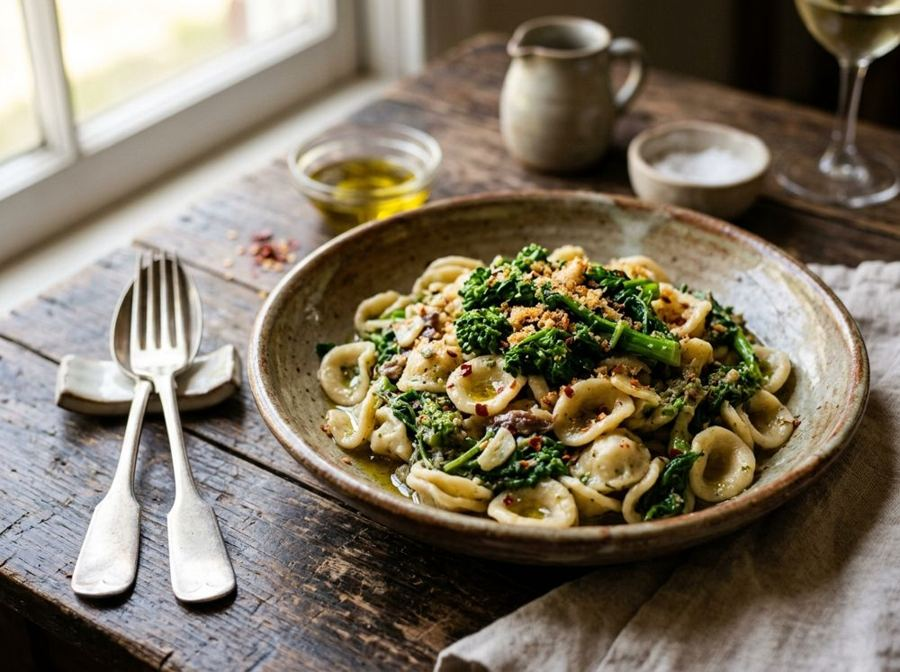

Orecchiette with turnip tops
A Puglian classic with turnip tops, garlic, anchovies and chilli.
Ingredients
- Semolina orecchiette360 g
- Cleaned turnip tops800 g
- Anchovy fillets in oil20 g
- Garlic6 g
- Chilli1 g
- Extra virgin olive oil50 ml
- Fine salt8 g
Allergens
Gluten, Fish
May contain traces of: Soy.
Method
- Wash the turnip tops and separate the tender leaves and florets.
- Bring salted water to the boil, add the turnip tops and, after 3 minutes, the orecchiette.
- Meanwhile, heat the oil with the garlic and chilli and melt the anchovies over a low heat.
- Drain the pasta and vegetables together when the pasta is al dente.
- Toss them in the pan with the seasoned oil for 1 minute and serve.
Nutrition facts (estimate)
| Per serving (337 g) | Per 100 g | |
|---|---|---|
| Energy | 2029 kJ / 485 kcal | 602 kJ / 144 kcal |
| Protein | 18 g | 5.3 g |
| Carbohydrates | 69 g | 20 g |
| of which sugars | 5.7 g | 1.7 g |
| Fat | 14 g | 4.1 g |
| of which saturates | 1.9 g | 0.6 g |
| Fibre | 7.1 g | 2.1 g |
| Salt | 1.0 g | 0.3 g |
AI estimates based on average CREA / USDA data: indicative only, not a substitute for medical or dietitian advice.
Open the recipe in the app for the shopping list, ingredient sheets and nearby shops.
Get it on Google Play